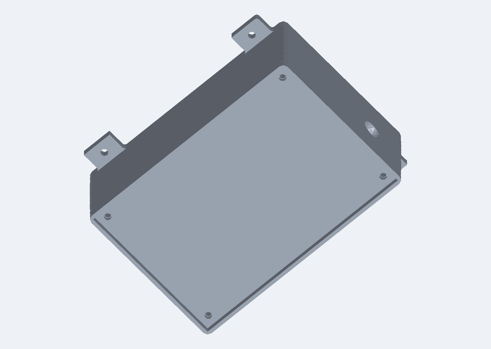
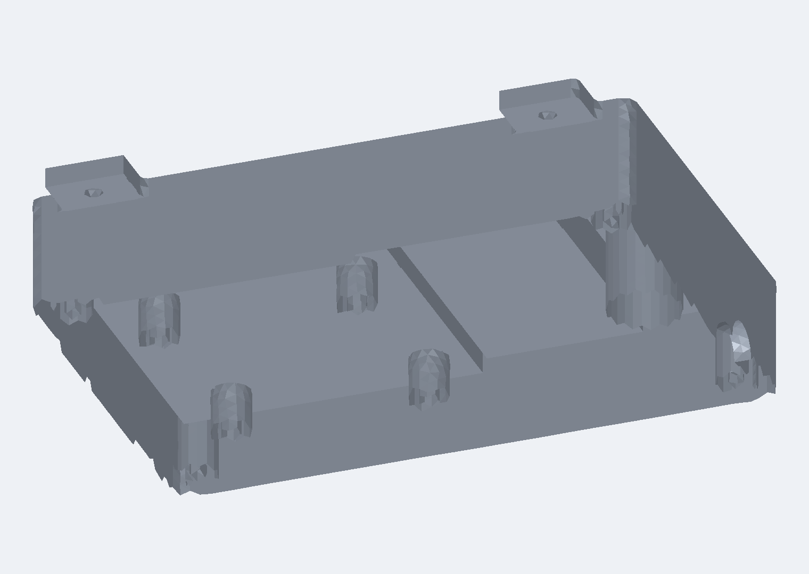
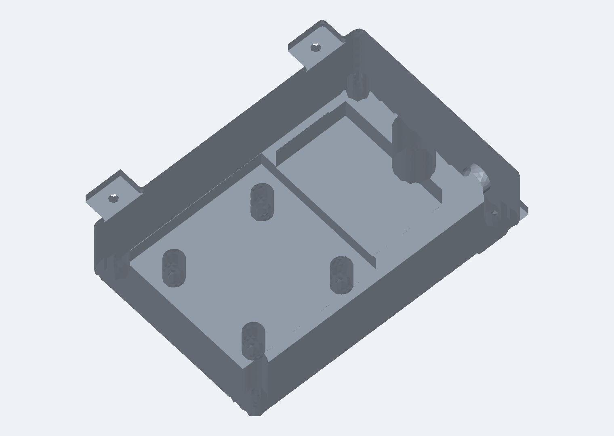

Structural & Thermal Qualification · Independent Research In Progress
Virtual environmental qualification of a machined avionics enclosure for a 7" class long-range multirotor. Requirements traced to manufacturer datasheets, modal FEA against a prop-passing excitation band, and a preliminary thermal hand calculation that rules the sealed architecture out before any FEA was built.

Closed assembly. 93 × 63 × 33 mm body, 79 mm across the mounting tabs. Six-fastener lid, four mounting tabs, and a side antenna penetration.

Lid removed. Internal mounting bosses on the 30.5 × 30.5 mm stack pattern, a divider rib separating the stack bay from the capacitor and VTX bay.
Headline Results
First mode at 3,984 Hz against a 3,440 Hz requirement. No mode falls inside the 87–2,293 Hz prop-passing excitation band.
The sealed enclosure needs 9.2 times its current external area to hold 40 °C at hover. It fails REQ-THM-001 in all four evaluated cases.
Across structural, thermal, mass, and envelope — each traced to a datasheet limit, a published standard, or a platform-derived condition.
A 10-body parametric model where every dimension is parameter-driven, so a redesign is a parameter edit rather than a remodel.
Machined 6061-T6 enclosure carrying a 43.2 g avionics stack dissipating roughly 11 W.
Moving the 7.9 W video transmitter outside drops the area requirement from 9.2× to 2.5×, which is achievable. This is what drives the next iteration.
Verification is by analysis only — no physical test article. Every requirement traces to a manufacturer-published limit, a military standard, or a platform-derived excitation condition.
Six component categories were scored against parameters that drive enclosure design — dissipation, mass, envelope, and temperature limit — rather than flight performance. Each parameter is normalised 0–10 across the candidate set and combined with per-category weights.
| Category | Selected | Score | Mass (g) | Dissipation (W) | Max temp (°C) |
|---|---|---|---|---|---|
| Flight controller | Matek H743-SLIM | 10.00 | 7.0 | 2.00 | 40 amb |
| 4-in-1 ESC | Holybro Tekko32 F4 65A | 9.06 | 15.8 | 0.90 | 150 |
| Video transmitter | RushFPV Tank Ultimate 1.6 W | 10.00 | 12.0 | 7.90 | 90 |
| GPS / compass | Matek M10Q-5883 | 9.21 | 8.0 | 0.07 | 80 |
| RC receiver | Happymodel EP2 ELRS | 9.88 | 0.4 | 0.20 | 80 |
| Stack total | 43.2 | 11.07 | — | ||
The motor/prop combination does not sit inside the enclosure — it is selected because it defines the vibration environment. Prop passing frequency is f = (RPM / 60) × Nblades, evaluated across four harmonics for the selected T-Motor F90 2806.5 running a 7" bi-blade at 2,600–17,200 RPM.
| Harmonic | At idle (2,600 RPM) | At max (17,200 RPM) |
|---|---|---|
| 1× | 87 Hz | 573 Hz |
| 2× | 173 Hz | 1,147 Hz |
| 3× | 260 Hz | 1,720 Hz |
| 4× | 347 Hz | 2,293 Hz |
The 3,440 Hz requirement is 1.5× the highest excitation frequency — a common preliminary separation rule. The binding thermal allowable is the flight controller's 40 °C ambient rating, which is a distinct and far more restrictive number than its ~100 °C component rating. Inside a sealed box, the ambient limit governs.
A 10-body Fusion 360 model in which 22 user parameters drive every dimension.

Cutaway. The stack bay carries the 30.5 × 30.5 mm mounting pattern shared by the flight controller and ESC; a divider rib separates it from the bay holding the video transmitter and the 6S bulk capacitor.
10 modes extracted in Fusion 360 (Nastran), bonded contacts throughout, fixed on the four mounting tab underside faces.
| Requirement | Predicted | Allowable | Margin | Status |
|---|---|---|---|---|
| REQ-STR-001 — first mode above 3,440 Hz | 3,984 Hz | 3,440 Hz | +0.16 | PASS |
| REQ-STR-002 — no mode in excitation band | 3,984 Hz (f₁) | 87–2,293 Hz | No mode in band | PASS |
The first mode is lid drumming — a first bending shape with a central antinode on the lid. Higher modes progress from lid deformation, through bending of the internal stack about each axis, to coupled modes where the capacitor and video transmitter drive wall deformation. The lid is the softest element in the assembly, which is what makes the contact treatment at the lid interface consequential.
Three meshes were run at 10%, 7%, and 5% element size. The result is worth stating precisely rather than summarising as “converged”:
| Mode | Change 10% → 7% | Change 7% → 5% | Assessment |
|---|---|---|---|
| Mode 1 | 3.2 % | 4.0 % | Not converged — change grew |
| Mode 3 | — | 0.8 % | Converged |
| Mode 4 | — | 0.2 % | Converged |
A lumped-parameter hand calculation in Python, built deliberately before any FEA — to establish an expected answer to check the FEA against.
| Case | hconv | hrad | ΔT | Tsurface | Margin | Status |
|---|---|---|---|---|---|---|
| Hover, bare Al | 8.7 | 0.8 | 51.0 °C | 86.0 °C | −0.53 | FAIL |
| Hover, anodised | 8.0 | 6.3 | 34.3 °C | 69.4 °C | −0.42 | FAIL |
| Cruise, bare Al | 54.6 | 0.7 | 8.8 °C | 43.8 °C | −0.09 | FAIL |
| Cruise, anodised | 54.6 | 5.5 | 8.1 °C | 43.1 °C | −0.07 | FAIL |
h in W/m²·K. External area 0.0221 m². Cruise Reynolds number 93,095 — laminar, so the flat-plate laminar correlation is appropriate.
The sealed architecture fails REQ-THM-001 in every case. Hover is the binding condition: it has the worst heat rejection despite the lowest ESC load. Anodising helps materially at hover — radiation carries 6.3 of the 14.3 W/m²·K total against 0.8 for bare aluminium — which makes surface finish a first-order design variable rather than a detail. It is not close to enough.
Closing a 34 °C rise against a 5 °C allowable requires 9.2× the current external area. The obvious response is fins, so fins were sized rather than assumed:
| Approach | Area achieved | Area required | Mass added | Verdict |
|---|---|---|---|---|
| Densely finned long walls | 3.4× | 9.2× | +101 g | Insufficient |
| Relocate the 7.9 W VTX externally | — | 2.5× | −12 g | Achievable |
What phases 5 and 6 cover.
Resolve internal gradients and component hot spots that the lumped model cannot see. If the FEA disagrees with the hand calculation by more than ~30%, that gap needs explaining before either result is trusted.
Miles' equation for 3-sigma response, then static FEA to verify positive margin against 6061-T6 yield. REQ-STR-003 is currently open.
Extract and justify the Method 514.8 PSD profile for a small multirotor. The excitation band is currently platform-derived only.
Relocate the video transmitter, add fins to the 2.5× target, and re-run modal — with the lid contact treatment revisited so mode 1 converges.
Requirements document with the full margin table and assumptions log, the weighted trade study workbook, the thermal scoping script, and the CAD in STEP.
Requirements & Margins → Trade Study Thermal Script